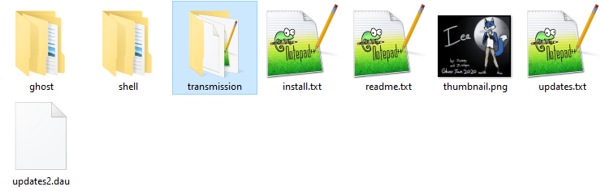

So, you're preparing to release a ghost! If you're new to this, you may want some tips to ensure you've got all your bases covered and that your release is as smooth as possible. If you're an experienced dev, maybe you're like me and constantly feel like you're forgetting something! Or maybe you're working on a ghost for an event like Ghost Jam and the stress of the time crunch has you scrambling to remember what you need. Whatever the case, hopefully this guide will give you confidence that you've filled in all the vital details and your ghost is ready to release into the world.
Up top will be the short list, which you can use if you're already experienced at this and just need a reminder/a list to check off. The rest of the guide is detailed explanations of each item, why it's there, and my personal recommendations.
Note: most of these tips apply regardless of what coding language your ghost is written in! The stuff listed here is mostly handled on the baseware side.
Read onwards if you want explanations and notes for each item! I recommend copying this list into a notepad somewhere and marking off each item as you complete it. Good luck!
This is one of the most important things you can do. ALWAYS do this at least once! This is not the same as testing the OnFirstBoot event in an existing copy of the ghost. Testing OnFirstBoot in an existing copy of the ghost (usually by using the \![raise,OnFirstBoot] tag in script input, or \![raise,OnFirstBoot,0] if you're on the GT Template) is generally fine for testing that your dialogue flows how you want, but there are several issues that it may mask. Here are some reasons why it's different and why you should do a fresh install.
This issue in particular is probably more specific to AYA and YAYA, as I'm not sure how other languages may handle this situation.
As you've been working on your ghost, you've probably initialized several variables. When you run OnFirstBoot via the raise tag, everything looks fine! But if you forgot to initialize anything, this can create critical bugs for your users upon installing the ghost. A fresh install will often reveal these issues, but simply testing the OnFirstBoot event will not, because on your existing installation the variables are already initialized and therefore will behave differently from uninitialized variables.
If you're not sure what initialization means, the most important thing to know is that variables which have yet to be created in AYA or YAYA are treated as empty strings. So if you have, say, a variable for how many times your ghost has been pet in total, you need that to be a number so that you can add to it properly. But if the user installs your ghost and that variable doesn't get created as a number from the start, AYA/YAYA will happily add numbers onto it as strings rather than doing math. 1 + 1 is 2, but "1" + "1" is "11". So after the user has pet your ghost 5 times, the pet counter would show "11111" instead of 5. That's a very tame example; there are far worse bugs that could happen, depending on how complex your ghost is! Variable initialization is really important, make sure you set all your variables to some kind of default value (like 0 in the case of a pet counter) in OnFirstBoot.
I have at times forgotten to actually put surface tags at the start of my OnFirstBoot dialogue. Kind of a silly mistake! But, it happens, especially when you're in a rush.
When testing the OnFirstBoot event via the raise tag, my ghost would appear to work properly! That happened because the ghost remained in the default surface that it was previously using, so I didn't see the issue. That was, until I did an install test, and on a fresh install my ghost was invisible for the first section of the dialogue. Embarassing, to say the least! But thankfully, I had decided to do a boot test before release, and it was easily fixed.
I'll get more into details about install.txt in the next section. But in general, as you're doing your install test, make sure you're checking that it installed to the right directory name, that the balloon installed with it, etc. I recommend using a second copy of SSP for this, especially if you're testing a balloon install as well! If the balloon is already installed in the version of SSP that you're testing on, you may not notice if the balloon isn't set up to install properly, because the balloon is already installed and therefore appears and works properly. It's happened to me before!
It is an extra bit of effort! But let me put it to you this way. Your firstboot is the user's first impression of your ghost. You want to set the stage and get people invested in using your ghost for a while to explore everything it has to offer, right? If your ghost appears buggy right from the get-go, it's a terrible first impression and might put people off straight away. Take the time to check it. It's only a few minutes of your day to set up a second copy of SSP and install your ghost on it, and it'll save you embarassment and hassle down the line.
Users may only see the firstboot once, but if the ghost doesn't work properly, it may be the only thing they ever see of it! So it's always worthwhile to give it a little extra effort and make sure that it's polished and working just how you want.
And let me tell you, do not get cocky with this, even if you're an experienced dev! I've released lots of ghosts, I have learned about all the issues that can happen on a fresh install first hand, so you'd think I'd have it covered by now and not need to do extra testing. But every time I so much as think about skipping a fresh install test, I end up finding big issues! Never ever ever skip this step; you can skip every other step on this list if you want, but never skip this one!
I touched on this above, but I'm going to list some things to keep in mind about directory names here.
gz_needle, that puts Needle in the G section and makes it hard to find. needle_gz is just as unique, and sorts it properly into the N section!master, SSP will complain about it!
master.Note that when I talk about folders being hard to find, this isn't just for the convenience of code crawlers like me! It's also for everyday users who might want to make backups, move their ghosts onto another computer, etc. Have your ghost be easy to find! You don't have to if you don't want to, but it makes life easier for folks if you do.
This section only applies if you're bundling a balloon with your ghost.
Are you bundling a balloon with your ghost? Great news! You can distribute your balloon inside of your ghost's nar file, so that they install together! It's wonderfully convenient for your users.
The way to do this is simple. All you need to do is copy your balloon's folder into your ghost's folder, on the top level. So the files would look something like this:
See the "transmission" folder that's highlighted there? That's the balloon for Iea, the ghost who's files are pictured here. Make sure you don't have any additional subfolders nested in here or anything, when you double click on the balloon's folder you should see all the files right there.
Note: You want to copy the balloon into your ghost's files, not move it. SSP won't run your balloon from the ghost's folder! Balloons are installed to SSP's balloon folder (unless you've changed your settings), so if you need to make adjustments to your balloon, you'll need to do it to the version in SSP's balloon folder in order to see the changes take effect. Just make sure that when you package your ghost for distribution, you've copied the latest version of the balloon into its files!
Anyways, with that done, you'll also need to make sure install.txt is pointing to your balloon directory! In the ghost's install.txt, check if there's an option for balloon.directory. If not, add one. You'll need to add the name of the folder of your balloon. So, for the ghost I showed before, I would add balloon.directory,transmission. This will vary based on the folder name of your balloon.
If you've done this correctly, when users install your ghost it should install both of them together! Convenience at it's finest.
NOTE: if you're NOT including a balloon with your ghost, please remove the balloon.directory from your ghost's install.txt! If you leave it in, SSP will still attempt to install a balloon, and will create empty folders in its balloon folder. This is really frustrating as a user, because it leaves you with a mess to clean up! If you don't plan to use it, remove it or comment it out.
You may also want to distribute your balloon separately, if you want it to exist independently of your ghost. Balloons can be distributed as nar files! Please distribute your balloons as nar files and not zips! Zip files will work, but then you don't get the benefits of file association. If you have nar files associated with SSP, you can double click them for easy/quick installation. Helpful for folks that may have difficulty with drag and drop! (If you haven't associated nar files with SSP, you can do it in the preferences with the "Associate Related File Extension to SSP" option on the General tab!)
Unless you have a really particular reason to be distributing your balloon as a zip file, please just use a nar! You can make them the same way as you make nar files for ghosts; drag and drop the balloon's folder onto your ghost, and tell it to make a nar. A lot of early English ghosts distributed balloons as zip files simply because they did not know they could be made into nars. There's not really a reason to keep doing it. At best it's a meaningless difference (nar files are zip files, just with file association and a cute icon), and at worst it's extra inconvenience for your users, particularly for folks that may have trouble with drag and drop.
First of all, you should double check the names of everything in here. Is the name of your creation correct? The name field is how the name will appear in the right click menu. If your creation is going to have a page on the Ukagaka Dream Team Wiki, this is the name we will use for it! That name is how people will have to find it in the right click menu, in the ghost explorer, etc. So, pick a good one! I don't really recommend adding your dev name or initials here. Think of this as the title for your creation, like the title of a book. Try to make it unique, but it's not the end of the world if it isn't.
And feel free to get creative with it, as well! This is the title for your creation, not necessarily the character's name! A ghost like Iea uses the name of the character as the ghost name, while a ghost like Please arrive 15 minutes before your scheduled interview time uses this as a (silly) title to help set the tone of the ghost.
Secondly, for a ghost, you also have the sakura.name. This name is really important! A lot of events and other things use the sakura name of the ghost, such as reference0 in OnGhostChanging or OnCommunicate.
You absolutely should set this to the name you want your main character to be referred to as, since a lot of ghosts will say this name as a part of their dialogues if they refer to your ghost! But if it's super generic or you know another ghost with the same one, you may want to try and make it unique somehow. But, don't stress too much about it. In events like OnGhostChanging, at least in SSP, there is other information that can be used to determine exactly which ghost this is, in the case of overlapping names. Just be aware of it, and pick something reasonable! The ghost "Please arrive 15 minutes before your scheduled interview time" that I mentioned? That one's sakura name is just "Boss".
Finally, about kero.name. This is not important in the same way that the sakura name is. If you don't have a kero character, just change it to a dash or something. But if you do have a kero character, go ahead and set it to their name. It doesn't come up often, but every great once in a while you may see something that will grab the kero name of your ghost to comment on it.
The craftman information is really important. This is the crediting for your ghost! Make sure you've got it right, and if you don't want to include credits to yourself, at least remove the template maker's information so that it doesn't cause confusion!
This section only applies if you're bundling a balloon with your ghost.
Yes, I already touched on balloons in the earlier section about install.txt. However, there is one more piece to the puzzle! And that is making your balloon the standard balloon for your ghost.
What does "standard" balloon mean? Put simply: When the user first boots up your ghost, if there is a balloon listed as the "standard" balloon, SSP will use that balloon by default if it is installed. That balloon will also get a special spot in the right click menu for your ghost! This is really helpful for users that have many balloons installed, or have their balloons sorted into subfolders. This is especially true if the name of your balloon is very distinct from your ghost, because let me tell you from experience, it's really easy to forget which balloon goes with what ghost!
To add a standard balloon for a ghost, go into the ghost's descript.txt and add balloon,Name of Balloon. Change "Name of Balloon" to whatever the name of the balloon is, not the folder name. This is the name as it appears in the right click menu! So if you wanted to recommend Thaw, you would write balloon,Thaw, and not balloon,thaw_ss-db.
A couple of additional notes with this! First of all, you can have multiple standard balloons! Just add multiple balloon entries! SSP Angel does this, like so:
balloon,Angelbox balloon,Angelbox (Biblically Accurate) balloon,Cotton Candy
And all of those 3 balloons will be given a special spot in the right click menu! I believe they are listed in the order they are written, and as far as I know, SSP will use the top option as the balloon to be used by default, as long as it is installed. If that one's not installed, I believe it'll continue down until it finds one that is.
That's my second note as well! You do not have to be the author of a balloon, nor bundle the balloon with your ghost, to make it a standard balloon! So if you don't want to make your own balloon for your ghost, but you like somebody else's balloon and think it's a nice fit with yours, you can absolutely set it as the standard balloon! If your users have that balloon installed, then your ghost will boot up and use it by default. It's simply a recommendation of what you think is a good fit.
You may want to link to whatever balloon you recommend on your ghost's download page, so that users who don't have it know where to find it (and who made it!). In SSP Angel's case, the other two standard balloons were made by the devs of that ghost, and are simply optional downloads. Once they're installed, they'll show up in the standard section of the balloon menu!
On to the readmes! Readmes, a helpful tool but often neglected. Here are some pointers to make your readmes helpful and more likely to actually be read.
Personally, I think readmes are best kept short and sweet. These are usually the things I note in a readme:
That's it! If you don't have anything more to say than that, don't feel pressured to add more!
Let me tell you a secret. I have straight up forgotten to add a homeurl in the first release of some of my ghosts, because we were rushing to finish in time for Ghost Jam and it slipped my mind because I thought I had added it already. If you're adding network updates to your ghost, make sure you double check this. It's a nightmare to find out after your release that you can't actually push updates to your ghost and will have to ask people to update it manually. (There is a way to distribute updates via supplemental files to fix this, but that's a guide I'll write another day.)
If you've not set up network updates, and you think there is any chance at all that you'll want to update your ghost in the future, sit down and set up network updates now. It will save you a ton of hassle in the future, and it's really not terribly difficult to do. There is a guide here on how to do it. It is old and needs updated with better recommendations, but it should still work. (In particular, these days I highly recommend making separate GitHub repositories for each ghost!)
On_homeurl in your dic files. You can fill in your homeurl here, and even add logic to change it based on certain conditions if you wanted.homeurl,(url here)
/. If you get a mysterious warning when you attempt an update that says "/ added", that's what it's referring to!Thumbnails are something easily forgotten! Especially if you mostly just keep your own ghost open and don't switch around much. If you leave in a template thumbnail, it can really affect the first impression of your ghost and make it look as though it's not very polished. So, either make a thumbnail, or remove the thumbnail altogether!
You don't need to include a thumbnail, but I highly recommend it. It's really useful for users to have a preview of what your ghost/balloon/shell is or looks like before they open it. You don't need to make it anything fancy! I never do, mine are pretty basic thumbnails that simply show what you'll get when you click, most of the time. For example, see Iea or Thaw's thumbnails.
Thumbnails are also nice for folks like wiki editors or event coordinators to use, as they have a quick image to represent your creation without having to make a new one! So if, say, you're making a ghost for Ghost Jam and it's going to be shared in a compilation post at the end, making a thumbnail means you're choosing how your ghost will be represented on that post!
Shell thumbnails are often forgotten, but I recommend making them as well. Especially if you have multiple shells, it's really nice for the user to have an idea of what style/look they'll get before they click. And even if you don't have multiple shells, you never know when someone else may make a shell for your ghost!
The icon is also often forgotten! Many many ghosts out there have the icon of the template they were made on, rather than their own.
You don't need to make your own icon! If you don't want to do this, then don't! But, I would recommend that you remove the existing icon rather than leaving it as template. SSP has a default bow and bell image it will use as the icon if there is none. And this looks a lot more polished than leaving it as a template icon!
This is another one that's really easy to forget. A lot of ghosts simply have template links in here! If you don't want links, just remove or comment those events entirely! It won't hurt anything; the tabs will simply be grayed out.
If you're not sure what to link, keep it simple. Links to yourself/your collaborators are handy, or if you have a place to find more info about your character (or maybe a wiki if it's a fandom character), those are good to have, or links for things like where to find more about ghosts. It doesn't need to be anything fancy!
Shell errors. What a pain they are. And let me tell you, as much as they are a pain for you the dev, they can be even more annoying for your users. For some folks, shell errors are so grating as to make ghosts that have them completely unusable. Don't let that be your ghost!
Yes, shell errors can look scary and there can be lots of them, but very very often they have a simple cause, like having written the wrong numbers somewhere. They're often not that hard to solve! If you've got shell errors, set aside some time to go through them.
The really great thing about shell errors? Most (but not all) of the time, SSP's error log can point you pretty much right to the error! If you look, they're usually pointing you to the exact animation, pattern, and line that the error occurs on! So that's a pretty good place to start looking. Often they will describe the error as well. Take the time to read the error log, it is trying to help you! (If what you're seeing is a "communication error", that's an error with AYA/YAYA/whatever SHIORI you're using. If you're using AYA/YAYA, try Tama to figure out what the actual issue is.)
Occasionally, the error will actually be wrong, depending on what kind of error it is. Don't be afraid to reach out and get help with solving shell errors! Lots of folks on the Ukagaka Dream Team Discord server have experience with fixing these and can help you.
A very common issue I see that causes all sorts of confusing errors, is trying to use same-line comments in surfaces.txt. surfaces.txt does not support same line comments! So if you're rooting around in your shell code and you find comments that are not on their own line, try moving them to their own line before anything else. I have personally seen this clear up many confusing errors straight away.
I also want to make the note: errors in SSP's error log accumulate over time! Try clicking the delete button on the error log to clear the errors, and then reload your ghost again. That will show just the current errors, and not any previous ones that may already have been resolved. That may help to make it a lot less overwhelming.
It's worth the effort to have an error-free shell! If you've been listening to that annoying error sound every time you reload your ghost, let me tell you, it's a huge relief when you finally reload it and there are no errors at all. Blissful silence.
Package your nar file and distribute it to the world!
I personally recommend using GitHub releases to distribute your ghost. It's easy to use if you've got a repository for your ghost, easy for users to find what they need to download, and it even will count downloads for you (though you'll need to use something like shields.io to actually see the numbers).
Even if you don't go with GitHub, I recommend using something where you can change the download after the fact! Why? Well... Let's imagine you upload your ghost to somewhere like MediaFire, and then you link that MediaFire file in a post on Tumblr. Then that post gets reblogged by a bigger blog, and gets hundreds of notes. Great! ... And then weeks or months later, your homeurl gets broken, or you find a really bad bug and you want to update the version that people will likely find and install first, or maybe, even, you decide you want to pull the ghost from the internet entirely. You can't do that if someone else has already reblogged your ghost. The link is what it is and you can't change it. Yes, I am speaking from personal experience and regret on this one. Don't let it be you.
Instead, consider setting up a little webpage for your ghost. It doesn't need to be anything fancy! I even have a little website template and guide on how to set it up on my guide for network updates with github. With a website, you could use that as the link in your Tumblr post. Then no matter what happens, you can always update your website with new information, a new nar file, whatever! This keeps the control in your hands.
A note for folks in our Discord server: this is why I also do not recommend directly attaching nar files to your messages! Once you've sent the message you can't edit the file at all unless you make a whole new post. It's a real pain, don't let it be you!
A note for folks that are using GitHub releases: If you make a link with this format: https://github.com/(username)/(repository)/releases/latest, users will be taken to your most recent release when they click it! This is the way I do it personally, these days, and I'm finding that it makes life very simple for me. I still link everything to my website so that users get the full context for what my ghost is, etc., but I no longer have to change the download links after I set them up once.
One final thing. On the Ukagaka Dream Team Wiki, we only share things that are considered public releases. That means they have to be available somewhere on the internet at large, not just in our Discord server. If you're wanting your ghost to be eligible for a wiki page, the best thing to do is make a website or social media post for it! But if you're wanting to keep your ghost private, then you should either attach the nar directly in the server, or use something like MediaFire or Dropbox and only share the link within the server.
And that's all! I know that's a lot, but most of these steps aren't really all that involved, they're simple checks for things you may have already done. I made this list because, as someone who has released around 20 ghosts at the time of writing, I have learned a lot of tricks to make ghost releases go more smoothly, and what sorts of issues to look out for!
I always find myself scrambling during Ghost Jams, struggling to remember what all the steps are, so I hope that having this list written down outside my head will help me remember everything I need to do and soothe the release day jitters. I hope it can do that for you, too! Release day is a big day, and if you've done everything on this list, then congratulations and good luck!